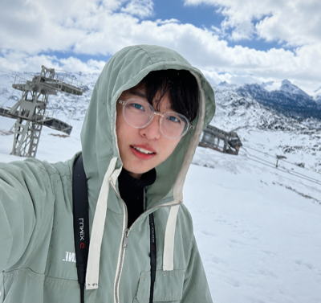
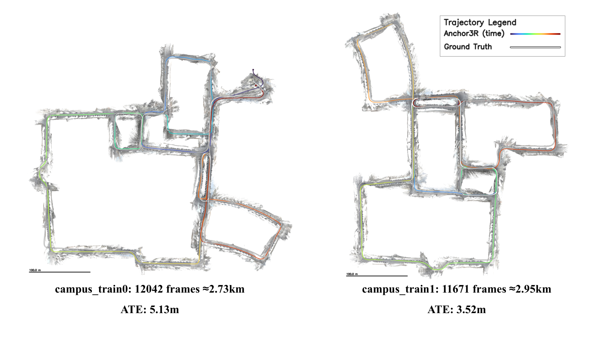
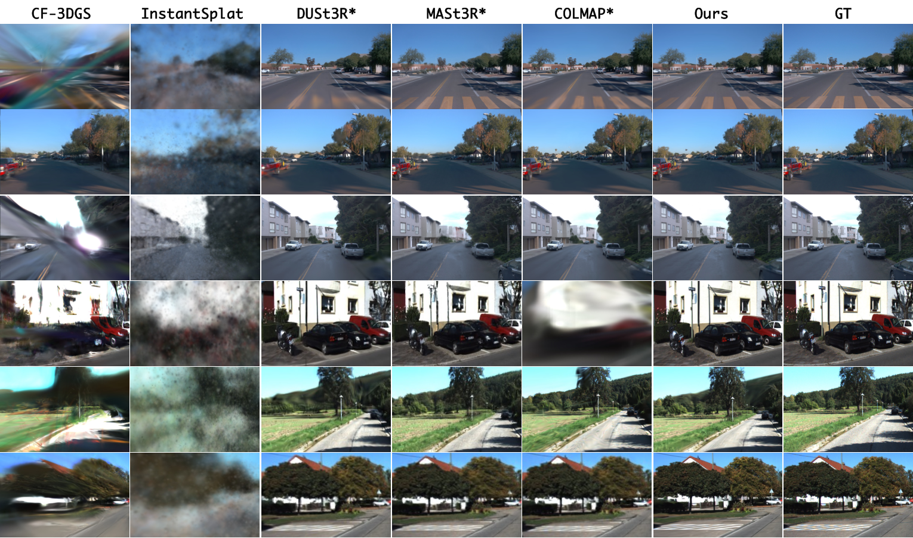
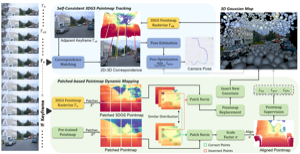
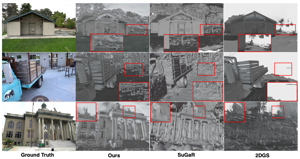
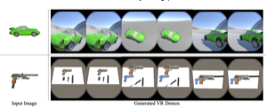
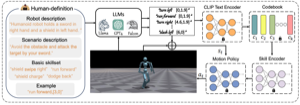

|
 |
Cheng, Chong 程冲I am a Ph.D. student in Artificial Intelligence at HKUST (Guangzhou & Clear Water Bay), advised by Prof. Hao Wang and Prof. Long Chen. I was a visiting student at NTU working with Prof. Guosheng Lin. I received my M.Sc. from TU Berlin. My research focuses on 3D/4D foundation models and world models. Starting from 3D scene representation, I have progressively expanded to long-horizon streaming autoregressive modeling. Currently, I am exploring unified representations that connect spatial reasoning, dynamic modeling, and understanding and generation, toward building unified multimodal world models. I am graduating soon and actively looking for job opportunities. Feel free to reach out! |
* denotes equal contribution. Representative papers listed below.






| 2026.05 – Present | Tencent — Qingyun Research Intern, working closely with Ran Zhang |
| 2025.08 – 2026.05 | Horizon Robotics — Research Intern, working closely with Xiaoyang Guo and Wei Yin |
| 2023.09 – 2024.06 | Tsinghua PBCSF — Research Intern (LLM & Agent) |
| 2022.03 – 2022.09 | DAI-Lab, TU Berlin — Research Assistant, advised by Prof. Sahin Albayrak |
| 2021.10 – 2022.03 | CARIAD (Volkswagen Group) — Research Intern |
Reviewer: CVPR, ICCV, ECCV, NeurIPS, ICLR, TIP, WACV, AAAI, ACM MM, Neurocomputing